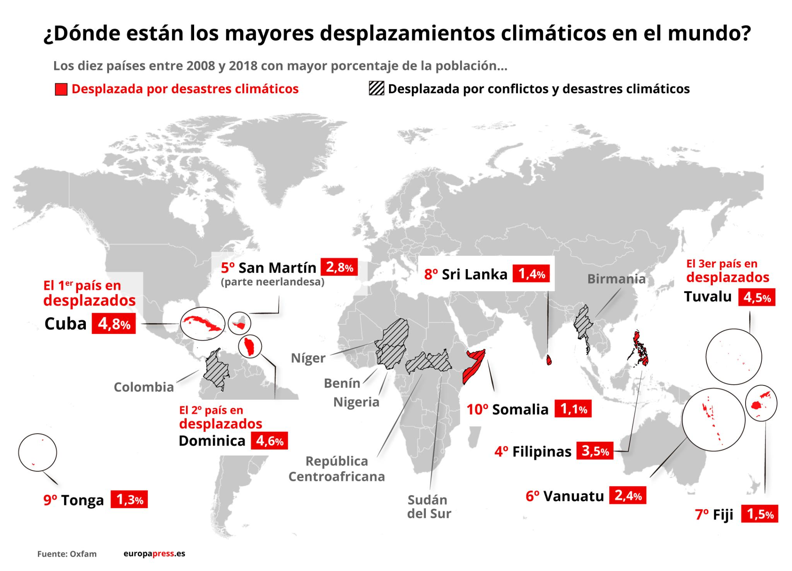

CAJA DE INFORMACION
GRAFICOS
| Nombre | Edad | Ciudad |
| Aitor | 34 | Badajoz |
España vivió el verano más caluroso registrado en 2025
España sufrió el verano más caluroso desde que se tiene registro (1961), según la agencia meteorológica AEMET.
- Temperatura media del verano (1 de junio al 31 de agosto) de 24,2 °C, superando el récord anterior de 2022 (24,1 °C).
- Fue 2,1 °C más caliente que el promedio del periodo 1991‑2020.
- Hubo una ola de calor de 16 días en agosto con temperaturas por encima de los 45 °C, especialmente en el sur (por ejemplo, Jerez de la Frontera registró 45,8 °C).
- Se quemaron alrededor de 382.000 hectáreas, superando los incendios del verano anterior en extensión.
- AEMET señala que nueve de los diez veranos más calurosos en España han sido en este siglo, lo que indica una clara tendencia de incremento térmico
Estudio alerta: el humo de incendios podría causar hasta 1,4 millones de muertes anuales para finales de siglo
Un nuevo estudio advierte que, si no se reducen drásticamente las emisiones de gases de efecto invernadero, el humo producido por incendios forestales podría generar hasta 1,4 millones de muertes anuales en el mundo hacia el año 2100.
- En EE. UU., se proyectan más de 70.000 muertes al año para 2050 debido al humo (PM2.5) de incendios, frente a las ~40.000 actuales.
- El humo de incendios es, según los investigadores, hasta diez veces más tóxico que la contaminación típica de combustibles fósiles.
- Se espera que algunas regiones como África sean de las más afectadas, con un aumento muy notable en muertes relacionadas con incendios.
CONTACTO